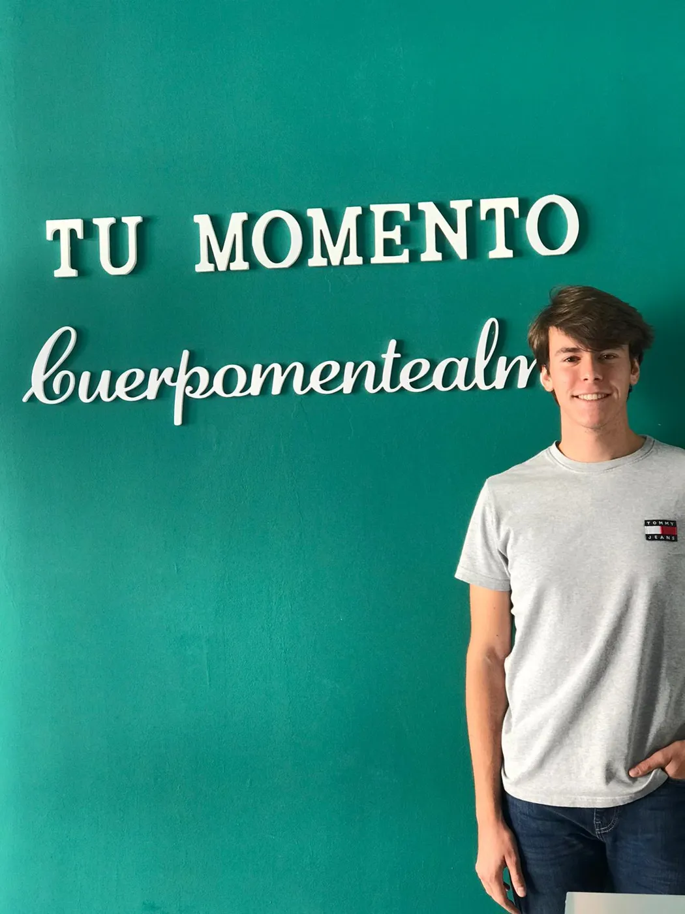
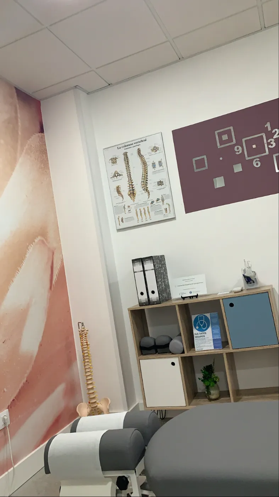
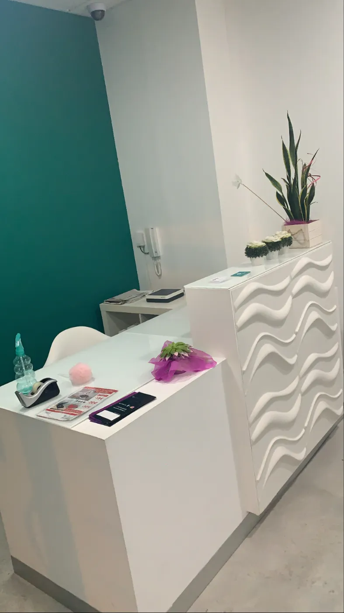
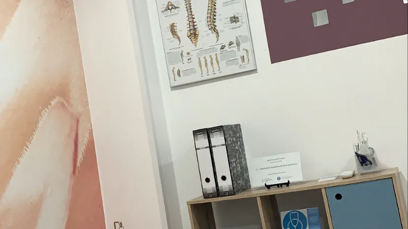

Quiropráctica en Villena
Vuelve a moverte con libertad.
Sesiones de quiropráctica personalizadas que trabajan la parte articular y también la muscular. Con trato cercano y explicándote cada paso.
- 5,0 en Google · 159 reseñas
- Hasta las 21:00 de lunes a viernes

01 — Motivos de consulta
¿Qué te trae por aquí?
Estas son las molestias por las que más me visitan. Si la tuya no está, escríbeme y lo hablamos.
Zona lumbar
Dolor en la parte baja de la espalda, rigidez al levantarte o al estar mucho rato sentado.
ConsultarCuello y cervicales
Tensión de pantalla y de móvil, cuello cargado o que no gira del todo.
ConsultarHombro y brazo
Molestias en el hombro, el manguito rotador o la escápula que bajan por el brazo.
ConsultarCiática y piramidal
Dolor que baja por el glúteo o la pierna y te molesta al caminar o al sentarte.
ConsultarCadera
Molestias en la cadera o en el lateral del muslo que te cuestan al andar.
ConsultarMareos y vértigos
Sensación de inestabilidad relacionada con tensión cervical. Lo valoramos juntos.
Consultar02 — Cómo trabajo
No es solo «crujir» la espalda.
Cada cuerpo llega con su historia. Por eso cada sesión empieza escuchándote y termina con un plan que entiendes.

-
1
Te escucho y te valoro
Qué te pasa, desde cuándo, cómo es tu día a día. Si tienes pruebas o informes, tráelos: ayudan a entender el origen de las molestias.
-
2
Ajuste y trabajo muscular
Trabajo la parte articular y la muscular a la vez, porque van de la mano. Antes de cada maniobra te explico qué voy a hacer.
-
3
Seguimiento a tu ritmo
Vemos cómo evolucionas sesión a sesión y ajustamos el plan. Te llevas pautas sencillas para casa.
-
¿Te encaja? La primera cita se reserva en un minuto.
Reservar por WhatsApp
03 — Sobre mí
Hola, soy Adrián.
Para mí no hay nada más satisfactorio que ayudarte a recuperar tu calidad de vida.
En mi consulta de Villena no hay prisas: cada sesión es tuya, te explico lo que hago y por qué, y vamos viendo juntos cómo avanzas. Los procesos de varios meses, con mejora constante, son los que hacen que adore mi profesión.

Tu
momento.

04 — Opiniones
5,0 de media en 159 reseñas.
Desde la primera sesión sentí un alivio enorme. No solo trabaja la parte ósea, sino también la muscular; todo va de la mano y era exactamente lo que necesitaba.
Me gusta especialmente su trato cercano y la forma tan clara de explicar lo que está haciendo. El tratamiento es muy personalizado.
Se toma el tiempo necesario para entender bien el origen de las molestias y explicar con claridad el tratamiento. Transmite mucha confianza.
Fui por problemas de vértigos y mareos, y desde la primera sesión noté el cambio. Además es muy simpático y profesional.
Después de casi un año con problemas de lumbares, en muy pocas sesiones me hizo volver a caminar. Un gran profesional y gran persona.
Opiniones reales publicadas en Google. Cada caso es distinto.
05 — Reserva
Pide tu cita en un minuto.
Rellena esto y se abrirá WhatsApp con tu mensaje ya escrito. Te contesto lo antes posible para darte hora.
¿Es la primera vez que vas a un quiropráctico?
No pasa nada. Antes de hacer nada te explico qué voy a hacer, y avanzamos a tu ritmo.
¿Qué llevo a la primera cita?
Ropa cómoda y, si los tienes, informes o pruebas (radiografías, resonancias…).
¿Cuántas sesiones necesitaré?
Depende de cada caso. En la primera sesión te cuento el plan y lo ajustamos según evoluciones.
06 — Dónde y cuándo
Plaza de las Malvas, 11. Villena.
- Lun
- Mar
- Mié
- Jue
- Vie
- Sáb
- Dom
9:00 – 14:00 y 15:00 – 21:00
de lunes a viernes · fines de semana, cerrado
—